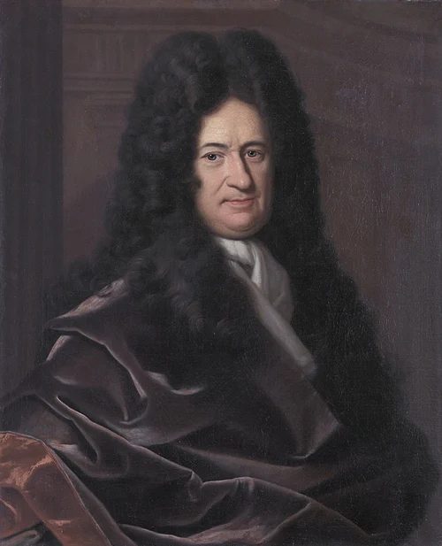

THE HISTORY OF CALCULUS ~ The Mathematics of Change

Hey learner!
Calculus is the mathematical study of continuous change. Before calculus, mathematics was largely static and could only handle objects that were perfectly still or moving at constant speeds. Calculus provided the framework to understand dynamic systems—how things move, grow, shrink, and change over time.
In standard high school curriculums, mathematics is often presented as a rigid set of rules—memorizing formulas, executing algebra, and solving for x. But when you step into the world of computer science, data structures, and engine building, the math fundamentally shifts. The real world doesn't sit still; it moves, it curves, and it changes continuously.
The Pre-Calculus World
Before the 17th century, mathematics was exceptionally good at the static. If an architect needed the area of a square plaza, or an astronomer needed the distance between two fixed points, geometry and algebra had the answers.
But the universe isn't static. Planets orbit in ellipses, objects accelerate as they fall, and physical parameters shift continuously over time. The mathematical tools of the era hit a hard wall when faced with change. You could easily calculate the average speed of a carriage journey (Distance / Time), but asking for the exact speed at a single, frozen instant in time resulted in dividing zero by zero—a mathematical paradox.
The Great Invention (Newton & Leibniz)

In the late 1600s, two brilliant minds—Isaac Newton in England and Gottfried Wilhelm Leibniz in Germany—independently developed the solution to this paradox. They invented a new branch of mathematics designed explicitly to handle continuous change.
Newton's "Fluxions"
Newton approached the problem from the perspective of physics. He was trying to map the motion of planets and gravity. He called his method the "method of fluxions," dealing with variables that flowed and changed over time.
Leibniz's Notation
Leibniz approached it from a purer geometric perspective, looking at the areas under curves and the tangents to them. Leibniz is actually the reason we use the elegant notation we have today, such as the integral symbol (∫) and the differential fraction (dy/dx).
While they feuded bitterly over who invented it first, the truth is that humanity simply needed this math, and it was born out of necessity.
Why Calculus Matters for Computer Science
You might be wondering: if computers calculate in discrete, binary steps (0s and 1s), why do we need a math based on continuous curves? The answer lies in optimization.
When you are building a modern SaaS product or working with advanced AI, you are dealing with massive datasets. Take a standard MakeHuman 3D base mesh, for example. It contains exactly 36,128 vertices. If you want to deform that mesh, calculate its surface normals, or train an AI model to generate it, you have to optimize thousands of variables simultaneously to minimize errors.
- Derivatives: Allow algorithms (like Gradient Descent in neural networks) to calculate the "slope" of an error, telling the computer exactly which direction to adjust its parameters to get smarter.
- Integrals: Allow engines to accumulate tiny, discrete data points into continuous, smooth structures, bridging the gap between raw data and fluid physics.
Visualizing the Core Philosophy
To truly grasp the essence of how this math works, we have to stop looking at equations and start looking at shapes. Grant Sanderson (3Blue1Brown) explains the fundamental shift from static geometry to continuous calculus brilliantly.
Key Takeaway: Calculus is the art of approximating curves by breaking them down into infinitely many, infinitely tiny straight lines and rectangles.